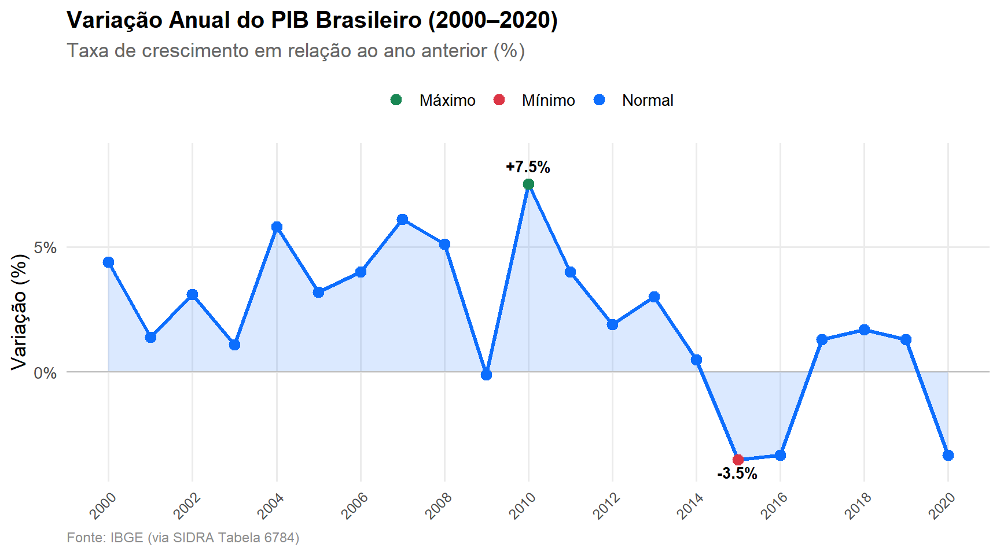
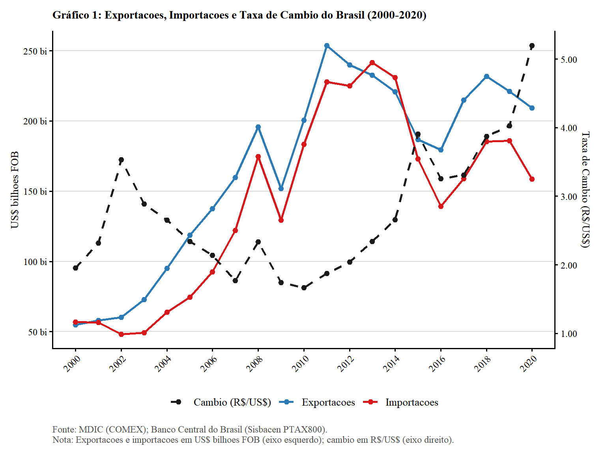

Ver código
body, p, li {
font-family: "Times New Roman", Times, serif;
text-align: justify;
}
p {
text-indent: 1.5cm;
}
.sem-recuo p {
text-indent: 0cm !important;
}body, p, li {
font-family: "Times New Roman", Times, serif;
text-align: justify;
}
p {
text-indent: 1.5cm;
}
.sem-recuo p {
text-indent: 0cm !important;
}library(readxl)
library(dplyr)
library(knitr)
library(kableExtra)
library(ggplot2)
library(scales)
library(tidyr)
library(ARDL)
library(openxlsx)A análise da restrição externa ao crescimento, fundamentada na Lei de Thirlwall, reveste-se de fundamental importância para compreender a trajetória da economia brasileira no período pós-2008, marcado pelo esgotamento do boom das commodities e por sucessivos ciclos de instabilidade. A relevância deste diagnóstico reside no fato de que, em economias periféricas como a do Brasil, o principal gargalo à expansão sustentada não é apenas a capacidade produtiva interna (oferta), mas sim a necessidade de manter o equilíbrio nas contas externas (demanda restrita pelo Balanço de Pagamentos). Investigar essa dinâmica permite identificar o “teto de crescimento” que a estrutura produtiva nacional consegue suportar sem incorrer em crises de dívida ou desvalorizações cambiais descontroladas, que acabam por abortar os processos de desenvolvimento (Santos, 2020; Vargas; Oliveira, 2021; Brito; Romero, 2019; Thirlwall, 1979).
Esta análise é crucial pois revela que o Brasil opera sob uma “dupla restrição”, manifestada tanto na frente comercial quanto na financeira. Pelo lado comercial, a elevada elasticidade-renda das importações do país expõe uma dependência crônica de insumos e bens de capital estrangeiros, enquanto a pauta exportadora permanece concentrada em produtos de baixo valor agregado e baixa elasticidade-renda internacional. Pelo lado financeiro, a análise evidencia como a volatilidade dos fluxos de capitais e o serviço da dívida externa impõem limites adicionais à autonomia da política econômica nacional, tornando o país vulnerável aos ciclos de liquidez global (Abeles; Cherskasky, 2020; Vargas; Oliveira, 2021).
Além disso, a importância deste estudo reside na desmistificação de que ajustes puramente nominais, como a desvalorização da taxa de câmbio, seriam suficientes para garantir a competitividade externa. As evidências mostram que, diante da rigidez tecnológica e da heterogeneidade estrutural, as variações nos preços (câmbio) têm tido eficácia limitada para promover uma mudança real na base produtiva, resultando muitas vezes em “dolarização de custos” e inflação, em vez de um processo virtuoso de substituição de importações. Assim, o ajuste externo brasileiro tem ocorrido predominantemente pela “via recessiva”, o que condena o país a taxas de crescimento medíocres e insuficientes para promover a convergência social (Abeles; Cherskasky, 2020; Vargas; Brito, 2024).
Em suma, compreender o crescimento restrito pelo Balanço de Pagamentos é o primeiro passo para a formulação de políticas industriais e de inovação ativas. Somente através de uma mudança estrutural que eleve a densidade tecnológica das exportações e reduza a propensão a importar é que o Brasil poderá romper o ciclo de estagnação de longo prazo e elevar seu teto de crescimento de forma sustentada, garantindo emprego e redução das desigualdades de forma autônoma frente aos choques externos.
A questão das restrições ao crescimento de longo prazo em economias em desenvolvimento e periféricas tem sido um tema central na teoria econômica, sendo abordada tanto por perspectivas estruturais quanto por modelos de demanda. De um lado, o pensamento estruturalista latino-americano - inaugurado com o chamado “Manifesto Latino-Americano” de 1949 de Raúl Prebisch - estabeleceu o modelo centro-periferia, argumentando que as economias periféricas sofrem com a deterioração dos termos de troca e com a dependência estrutural, necessitando de um processo de industrialização para superar o subdesenvolvimento (Bielschowsky, 2020).
A Lei de Thirlwall (1979) oferece uma formalização macrodinâmica para essa restrição, afirmando que a taxa de crescimento de longo prazo de um país é limitada pelo equilíbrio do seu balanço de pagamentos. Ela é determinada, em grande medida, pela razão entre a taxa de crescimento das exportações e a elasticidade-renda da demanda por importações.
A interseção desses temas reside no fato de que os fatores estruturais identificados por Prebish (1949) – a dependência de exportações de baixo valor agregado (com baixa elasticidade-renda) e a crescente demanda por importações de manufaturas (com alta elasticidade-renda) – são precisamente aqueles que geram os parâmetros desfavoráveis que impõem o severo constrangimento do balanço de pagamentos, tal como modelado pela Lei de Thirlwall (1979).
Este relatório apresenta a evolução da variação percentual anual do volume do Produto Interno Bruto (PIB) do Brasil a preços de mercado entre 2000 e 2020, com base nos dados da Tabela 6784 do Sistema IBGE de Recuperação Automática (SIDRA).
library(tidyverse)
library(readxl)
library(kableExtra)
pib_anual <- read_excel("C:/Users/manoe/Downloads/tabela6784 (1).xlsx", skip = 3, col_names = FALSE) %>%
select(
ano_pib = 2,
variacao = 3
) %>%
filter(!is.na(ano_pib) & !is.na(variacao)) %>%
mutate(
ano_pib = as.numeric(ano_pib),
variacao = as.numeric(variacao)
)pib_anual %>%
mutate(
var_fmt = paste0(ifelse(variacao >= 0, "+", ""), round(variacao, 1), "%")
) %>%
select(ano_pib, var_fmt) %>%
knitr::kable(
col.names = c("Ano", "Variação Anual do PIB (%)"),
align = c("l", "r"),
caption = "Produto Interno Bruto (PIB) — Taxa de variação real anual (2000–2020)"
) %>%
kable_classic(full_width = FALSE, html_font = "Arial", font_size = 14) %>%
column_spec(1, bold = TRUE) %>%
row_spec(
which(pib_anual$ano_pib == pib_anual$ano_pib[which.max(pib_anual$variacao)]),
background = "#d4edda", bold = TRUE
) %>%
row_spec(
which(pib_anual$ano_pib == pib_anual$ano_pib[which.min(pib_anual$variacao)]),
background = "#f8d7da"
) %>%
footnote(
general = "Linha verde = Maior crescimento do período; Linha vermelha = Maior retração (menor valor).",
general_title = "Nota: ",
footnote_as_chunk = FALSE
) %>%
footnote(
general = "IBGE - Contas Nacionais Trimestrais (Tabela 6784/SIDRA).",
general_title = "Fonte: ",
footnote_as_chunk = TRUE
)| Ano | Variação Anual do PIB (%) |
|---|---|
| 2000 | +4.4% |
| 2001 | +1.4% |
| 2002 | +3.1% |
| 2003 | +1.1% |
| 2004 | +5.8% |
| 2005 | +3.2% |
| 2006 | +4% |
| 2007 | +6.1% |
| 2008 | +5.1% |
| 2009 | -0.1% |
| 2010 | +7.5% |
| 2011 | +4% |
| 2012 | +1.9% |
| 2013 | +3% |
| 2014 | +0.5% |
| 2015 | -3.5% |
| 2016 | -3.3% |
| 2017 | +1.3% |
| 2018 | +1.7% |
| 2019 | +1.3% |
| 2020 | -3.3% |
| Nota: | |
| Linha verde = Maior crescimento do período; Linha vermelha = Maior retração (menor valor). | |
| Fonte: IBGE - Contas Nacionais Trimestrais (Tabela 6784/SIDRA). |
ggplot(pib_anual, aes(x = ano_pib, y = variacao)) +
geom_area(
fill = "#0d6efd",
alpha = 0.15
) +
geom_hline(
yintercept = 0,
color = "gray75",
linewidth = 0.5
) +
geom_line(color = "#0d6efd", linewidth = 1.1) +
geom_point(
aes(color = ifelse(
variacao == max(variacao), "Máximo",
ifelse(variacao == min(variacao), "Mínimo", "Normal")
)),
size = 3
) +
geom_text(
data = pib_anual |>
filter(
variacao == max(variacao) |
variacao == min(variacao)
),
aes(
label = paste0(
ifelse(variacao >= 0, "+", ""),
round(variacao, 1),
"%"
),
vjust = ifelse(variacao >= 0, -1, 1.5)
),
size = 3.5,
fontface = "bold"
) +
scale_color_manual(
values = c(
"Máximo" = "#198754",
"Mínimo" = "#dc3545",
"Normal" = "#0d6efd"
),
guide = guide_legend(title = NULL)
) +
scale_x_continuous(breaks = seq(2000, 2020, 2)) + # Escala ajustada de 2 em 2 anos para não poluir
scale_y_continuous(
labels = function(x) paste0(x, "%"),
expand = expansion(mult = c(0.08, 0.15))
) +
labs(
title = "Variação Anual do PIB Brasileiro (2000–2020)",
subtitle = "Taxa de crescimento em relação ao ano anterior (%)",
x = NULL,
y = "Variação (%)",
caption = "Fonte: IBGE (via SIDRA Tabela 6784)"
) +
theme_minimal(base_size = 13) +
theme(
plot.title = element_text(face = "bold", size = 15),
plot.subtitle = element_text(color = "gray40", margin = margin(b = 10)),
plot.caption = element_text(color = "gray55", size = 9, hjust = 0),
legend.position = "top",
panel.grid.minor = element_blank(),
axis.text.x = element_text(
angle = 45,
hjust = 1,
size = 9
)
)
O gráfico mostra taxas de crescimento robustas até 2008 (com picos em 2004 e 2007). Esse período coincide com o boom dos países emergentes, impulsionado pela demanda chinesa e pela alta nos preços das matérias-primas. À luz da teoria de Prebisch (1949), esse alívio na restrição externa foi conjuntural, permitindo que o país crescesse sem gerar desequilíbrios imediatos no Balanço de Pagamentos, mas sem alterar a dependência de produtos de baixo valor agregado. A queda abrupta em 2009 reflete o impacto imediato da crise financeira internacional via restrição de crédito e fuga de capitais. No entanto, o pico de crescimento em 2010 (próximo a 8%) foi resultado de políticas anticíclicas vigorosas (monetárias, fiscais e de crédito) e da manutenção do patamar elevado dos preços das commodities.
A partir de 2011, o gráfico aponta para uma desaceleração contínua, culminando na recessão de 2015-2016. Esse movimento valida a hipótese de Thirlwall: ao não realizar uma mudança estrutural para aumentar a elasticidade-renda das exportações, o Brasil esbarrou no seu “teto” de crescimento. A forte queda em 2020 deve-se à crise sanitária, que recrudesceu problemas estruturais e cambiais já existentes. A recuperação em 2021 e a estabilização posterior em patamares baixos (2% a 3%) reforçam a ideia de que, sem uma política industrial de inovação que supere a heterogeneidade estrutural defendida por Prebisch (1949), a economia permanece vulnerável e incapaz de sustentar expansões duradouras.
A Lei de Thirlwall (1979) oferece uma formalização macrodinâmica para essa restrição, afirmando que a taxa de crescimento de longo prazo de um país é limitada pelo equilíbrio do seu balanço de pagamentos. Ela é determinada, em grande medida, pela razão entre a taxa de crescimento das exportações e a elasticidade-renda da demanda por importações.
A interseção desses temas reside no fato de que os fatores estruturais identificados por Prebish (1949) – a dependência de exportações de baixo valor agregado (com baixa elasticidade-renda) e a crescente demanda por importações de manufaturas (com alta elasticidade-renda) – são precisamente aqueles que geram os parâmetros desfavoráveis que impõem o severo constrangimento do balanço de pagamentos, tal como modelado pela Lei de Thirlwall (1979).
max_pib <- pib_anual[which.max(pib_anual$variacao), ]
min_pib <- pib_anual[which.min(pib_anual$variacao), ]
anos_negativos <- sum(pib_anual$variacao < 0)df <- read_excel("C:/Users/manoe/Downloads/V_EXPORTACAO_GERAL_2000-01_2020-12_DT20260607.xlsx")
colnames(df) <- c("ano", "valor_fob")
df <- df |>
mutate(valor_bi = valor_fob / 1e9)df |>
mutate(
valor_fmt = dollar(valor_fob, prefix = "US$ ", big.mark = ".", decimal.mark = ",", accuracy = 1),
var_pct = (valor_fob / lag(valor_fob) - 1) * 100,
var_fmt = ifelse(is.na(var_pct), "—",
paste0(ifelse(var_pct >= 0, "+", ""), round(var_pct, 1), "%"))
) |>
select(ano, valor_fmt, var_fmt) |>
kbl(
col.names = c("Ano", "Valor US$ FOB", "Variação anual"),
align = c("l", "r", "r"),
caption = "Tabela 1: Exportações Gerais do Brasil — 2000 a 2020 (US$ FOB)"
) |>
kable_styling(
bootstrap_options = c("striped", "hover", "condensed", "responsive"),
full_width = FALSE,
position = "center",
font_size = 14
) |>
column_spec(1, bold = TRUE) |>
row_spec(
which(df$ano == df$ano[which.max(df$valor_fob)]),
background = "#d4edda", bold = TRUE
) |>
row_spec(
which(df$ano == df$ano[which.min(df$valor_fob)]),
background = "#f8d7da"
) |>
footnote(
general = "Linha verde = maior valor do período;
Linha vermelha = menor valor.
Fonte: COMEX."
)| Ano | Valor US$ FOB | Variação anual |
|---|---|---|
| 2000 | US$ 54.993.159.648 | — |
| 2001 | US$ 58.032.294.243 | +5.5% |
| 2002 | US$ 60.147.158.103 | +3.6% |
| 2003 | US$ 72.776.746.690 | +21% |
| 2004 | US$ 95.121.672.369 | +30.7% |
| 2005 | US$ 118.597.835.407 | +24.7% |
| 2006 | US$ 137.581.151.209 | +16% |
| 2007 | US$ 159.816.383.833 | +16.2% |
| 2008 | US$ 195.764.624.177 | +22.5% |
| 2009 | US$ 151.791.674.186 | -22.5% |
| 2010 | US$ 200.434.134.826 | +32% |
| 2011 | US$ 253.666.309.507 | +26.6% |
| 2012 | US$ 239.952.538.158 | -5.4% |
| 2013 | US$ 232.544.255.606 | -3.1% |
| 2014 | US$ 220.923.236.838 | -5% |
| 2015 | US$ 186.782.355.063 | -15.5% |
| 2016 | US$ 179.526.129.214 | -3.9% |
| 2017 | US$ 214.988.108.353 | +19.8% |
| 2018 | US$ 231.889.523.399 | +7.9% |
| 2019 | US$ 221.126.807.647 | -4.6% |
| 2020 | US$ 209.180.241.655 | -5.4% |
| Note: | ||
| Linha verde = maior valor do período; Linha vermelha = menor valor. Fonte: COMEX. |
Entre 2010 e 2011, observa-se uma retomada vigorosa, culminando no pico da série em 2011 (cerca de US$ 250 bilhões). Esse período é descrito nas fontes como o auge do boom das commodities. Esse crescimento foi impulsionado principalmente pela demanda massiva da China por matérias-primas e pelo aumento dos preços internacionais de grãos, minérios e petróleo. O círculo virtuoso permitiu que o Brasil registrasse superávits recordes, mas, sob a ótica estruturalista, esse alívio foi conjuntural e não alterou a dependência de produtos de baixo valor agregado. A partir de 2012, a tabela 1 revela uma tendência de declínio contínuo, atingindo um vale em 2016. As fontes explicam que o ciclo virtuoso começou a se esgotar entre 2011 e 2013 devido à interrupção da alta de preços das matérias-primas. A partir do final de 2013, a queda dos preços das commodities se acelerou, exemplificada pela queda de 55% no preço do petróleo entre 2013 e 2015, expondo a vulnerabilidade externa brasileira (Santos, 2020).
max_row <- df[which.max(df$valor_bi), ]
min_row <- df[which.min(df$valor_bi), ]
var_total <- (df$valor_fob[nrow(df)] / df$valor_fob[1] - 1) * 100Este relatório apresenta a evolução das importações gerais brasileiras entre 2000 e 2020, com base em dados do Ministério do Desenvolvimento, Indústria, Comércio e Serviços (MDIC). Os valores estão expressos em dólares americanos (US$ FOB).
dados_brutos <- read_excel("C:/Users/manoe/Downloads/V_IMPORTACAO_GERAL_2000-01_2020-12_DT20260618.xlsx")
colnames(dados_brutos) <- c("ano_ref", "valor_usd")
base_anual <- dados_brutos |>
mutate(valor_bi = valor_usd / 1e9)base_anual |>
mutate(
usd_fmt = dollar(valor_usd, prefix = "US$ ", big.mark = ".", decimal.mark = ",", accuracy = 1),
delta_pct = (valor_usd / lag(valor_usd) - 1) * 100,
delta_fmt = ifelse(is.na(delta_pct), "-",
paste0(ifelse(delta_pct >= 0, "+", ""), round(delta_pct, 1), "%"))
) |>
select(ano_ref, usd_fmt, delta_fmt) |>
kbl(
col.names = c("Ano", "Valor US$ FOB", "Variacao anual"),
align = c("l", "r", "r"),
caption = "Tabela 2: Importações Gerais do Brasil - 2000 a 2020 (US$ FOB)"
) |>
kable_styling(
bootstrap_options = c("striped", "hover", "condensed", "responsive"),
full_width = FALSE,
position = "center",
font_size = 14
) |>
column_spec(1, bold = TRUE) |>
row_spec(
which(base_anual$ano_ref == base_anual$ano_ref[which.max(base_anual$valor_usd)]),
background = "#d4edda", bold = TRUE
) |>
row_spec(
which(base_anual$ano_ref == base_anual$ano_ref[which.min(base_anual$valor_usd)]),
background = "#f8d7da"
) |>
footnote(
general = "Linha verde = maior valor do periodo;
Linha vermelha = menor valor.
Fonte: COMEX"
)| Ano | Valor US$ FOB | Variacao anual |
|---|---|---|
| 2000 | US$ 56.976.350.170 | - |
| 2001 | US$ 56.569.020.182 | -0.7% |
| 2002 | US$ 48.274.763.553 | -14.7% |
| 2003 | US$ 49.307.163.152 | +2.1% |
| 2004 | US$ 63.813.636.668 | +29.4% |
| 2005 | US$ 74.692.215.554 | +17% |
| 2006 | US$ 92.531.096.870 | +23.9% |
| 2007 | US$ 122.041.949.120 | +31.9% |
| 2008 | US$ 174.707.087.626 | +43.2% |
| 2009 | US$ 129.397.611.523 | -25.9% |
| 2010 | US$ 183.336.964.846 | +41.7% |
| 2011 | US$ 227.969.756.701 | +24.3% |
| 2012 | US$ 225.166.426.069 | -1.2% |
| 2013 | US$ 241.500.886.459 | +7.3% |
| 2014 | US$ 230.823.018.796 | -4.4% |
| 2015 | US$ 173.104.259.077 | -25% |
| 2016 | US$ 139.321.357.653 | -19.5% |
| 2017 | US$ 158.951.444.003 | +14.1% |
| 2018 | US$ 185.321.983.502 | +16.6% |
| 2019 | US$ 185.927.967.580 | +0.3% |
| 2020 | US$ 158.786.824.879 | -14.6% |
| Note: | ||
| Linha verde = maior valor do periodo; Linha vermelha = menor valor. Fonte: COMEX |
A Tabela 2 apresenta a evolução das importações brasileiras entre 2008 e 2020, revelando uma trajetória que espelha as fases de expansão e a crise da economia nacional. No início da série, observa-se um patamar elevado de absorção de produtos estrangeiros, o que se associa ao período de Real apreciado e ao auge do boom das commodities. Durante esse intervalo, a moeda forte barateou insumos e bens de capital, consolidando uma dependência estrutural da indústria brasileira em relação ao mercado externo (Santos, 2020).
A partir de 2012, e de forma mais acentuada após 2014, o gráfico registra uma tendência de declínio contínuo nos volumes importados. Esse movimento coincide com o esgotamento do ciclo virtuoso de preços internacionais e a subsequente desaceleração da economia brasileira. Sob a perspectiva da restrição externa, esse recuo não sinaliza um ganho de competitividade da produção doméstica, mas sim um ajuste forçado pela redução da renda. Diante da recessão e da perda de fôlego do PIB, o país comprimiu suas importações por falta de poder de compra, evidenciando a fragilidade de um modelo que não logrou realizar a substituição de importações em setores de maior densidade tecnológica. Também é ilustrado a volatilidade extrema causada pelo choque sanitário de 2020, com uma queda brusca no segundo trimestre daquele ano. Esse fenômeno refletiu a paralisação simultânea da atividade econômica interna e a desorganização das cadeias globais de suprimentos. Em suma, o comportamento das importações no período demonstra visualmente o “gargalo externo” brasileiro: a economia só consegue sustentar altos volumes de importação em cenários internacionais excepcionalmente favoráveis, sendo forçada a ajustes recessivos quando a restrição do Balanço de pagamentos se impõe sobre a estrutura. Isso é recorrente na dinâmica da economia brasileira (Prebisch,1949).
reg_maior <- base_anual[which.max(base_anual$valor_bi), ]
reg_menor <- base_anual[which.min(base_anual$valor_bi), ]
tx_periodo <- (base_anual$valor_usd[nrow(base_anual)] / base_anual$valor_usd[1] - 1) * 100Este relatório apresenta a evolução da taxa de câmbio comercial (venda) entre o Real e o Dólar americano, de 2000 a 2020, com base em dados do Banco Central do Brasil.
dados_cambio <- read_excel("C:/Users/manoe/Downloads/transforma para xlx.xlsx")
colnames(dados_cambio) <- c("ano_cambio", "taxa_media")
cambio_anual <- dados_cambio cambio_anual |>
mutate(
taxa_fmt = paste0("R$ ", format(round(taxa_media, 3), decimal.mark = ",")),
var_pct = (taxa_media / lag(taxa_media) - 1) * 100,
var_fmt = ifelse(is.na(var_pct), "—",
paste0(ifelse(var_pct >= 0, "+", ""), round(var_pct, 1), "%"))
) |>
select(ano_cambio, taxa_fmt, var_fmt) |>
kbl(
col.names = c("Ano", "Taxa Média (R$/US$)", "Variação anual"),
align = c("l", "r", "r"),
caption = "Tabela 3: Taxa de Câmbio Comercial (Venda) — 2000 a 2020 (R$/US$)"
) |>
kable_styling(
bootstrap_options = c("striped", "hover", "condensed", "responsive"),
full_width = FALSE,
position = "center",
font_size = 14
) |>
column_spec(1, bold = TRUE) |>
row_spec(
which(cambio_anual$ano_cambio == cambio_anual$ano_cambio[which.max(cambio_anual$taxa_media)]),
background = "#d4edda", bold = TRUE
) |>
row_spec(
which(cambio_anual$ano_cambio == cambio_anual$ano_cambio[which.min(cambio_anual$taxa_media)]),
background = "#f8d7da"
) |>
footnote(
general = "Linha verde = Maior taxa do período;
Linha vermelha = Menor taxa.
Fonte: Sisbacen PTAX800 (2025)."
)| Ano | Taxa Média (R$/US$) | Variação anual |
|---|---|---|
| 2000 | R$ 1,955 | — |
| 2001 | R$ 2,320 | +18.7% |
| 2002 | R$ 3,533 | +52.3% |
| 2003 | R$ 2,888 | -18.2% |
| 2004 | R$ 2,654 | -8.1% |
| 2005 | R$ 2,340 | -11.8% |
| 2006 | R$ 2,137 | -8.7% |
| 2007 | R$ 1,770 | -17.2% |
| 2008 | R$ 2,336 | +32% |
| 2009 | R$ 1,740 | -25.5% |
| 2010 | R$ 1,665 | -4.3% |
| 2011 | R$ 1,875 | +12.6% |
| 2012 | R$ 2,043 | +8.9% |
| 2013 | R$ 2,342 | +14.6% |
| 2014 | R$ 2,656 | +13.4% |
| 2015 | R$ 3,904 | +47% |
| 2016 | R$ 3,259 | -16.5% |
| 2017 | R$ 3,307 | +1.5% |
| 2018 | R$ 3,874 | +17.1% |
| 2019 | R$ 4,030 | +4% |
| 2020 | R$ 5,196 | +28.9% |
| Note: | ||
| Linha verde = Maior taxa do período; Linha vermelha = Menor taxa. Fonte: Sisbacen PTAX800 (2025). |
Até meados de 2011, a tabela 3 reflete um período de Real apreciado (moeda forte), impulsionado pelo boom das commodities e pelo diferencial de juros favorável ao Brasil. Sob a ótica estruturalista, essa valorização teve um papel ambíguo: se, por um lado, facilitou o controle inflacionário, por outro, atuou como uma “restrição interna severa”, comprimindo as margens da indústria nacional e elevando a elasticidade-renda das importações (π). As empresas tornaram-se dependentes de insumos estrangeiros baratos, consolidando um processo de desindustrialização precoce (Bielschowsky, 2020).
Observa-se na tabela 3, também, um salto brusco na taxa de câmbio no final de 2008. Esse movimento decorreu da fuga generalizada de capitais e da redução da liquidez internacional após a falência do Lehman Brothers. Para conter essa volatilidade, o BCB intensificou o regime de “flutuação suja”, intervindo ativamente por meio de swaps cambiais e leilões de divisas para evitar uma desestabilização financeira sistêmica (Jayme Jr.; Rezende, 2008).
max_cambio <- cambio_anual[which.max(cambio_anual$taxa_media), ]
min_cambio <- cambio_anual[which.min(cambio_anual$taxa_media), ]
var_total_cambio <- (cambio_anual$taxa_media[nrow(cambio_anual)] / cambio_anual$taxa_media[1] - 1) * 100sintese <- df |>
select(ano, expo_bi = valor_bi) |>
left_join(base_anual |> select(ano = ano_ref, impo_bi = valor_bi), by = "ano") |>
left_join(cambio_anual |> select(ano = ano_cambio, taxa = taxa_media), by = "ano")
escala <- max(sintese$expo_bi, sintese$impo_bi, na.rm = TRUE) /
max(sintese$taxa, na.rm = TRUE)
ggplot(sintese, aes(x = ano)) +
# Exportações
geom_line(aes(y = expo_bi, color = "Exportacoes"), linewidth = 0.9) +
geom_point(aes(y = expo_bi, color = "Exportacoes"), size = 2) +
# Importações
geom_line(aes(y = impo_bi, color = "Importacoes"), linewidth = 0.9) +
geom_point(aes(y = impo_bi, color = "Importacoes"), size = 2) +
# Câmbio (eixo secundário)
geom_line(aes(y = taxa * escala, color = "Cambio (R$/US$)"),
linewidth = 0.9, linetype = "dashed") +
geom_point(aes(y = taxa * escala, color = "Cambio (R$/US$)"), size = 2) +
scale_y_continuous(
name = "US$ bilhoes FOB",
labels = label_number(suffix = " bi", big.mark = "."),
sec.axis = sec_axis(~ . / escala,
name = "Taxa de Cambio (R$/US$)",
labels = label_number(accuracy = 0.01))
) +
scale_x_continuous(breaks = seq(2000, 2020, 2)) +
scale_color_manual(
values = c(
"Exportacoes" = "#2c7bb6",
"Importacoes" = "#d7191c",
"Cambio (R$/US$)" = "#1a1a1a"
)
) +
labs(
title = "Gráfico 1: Exportacoes, Importacoes e Taxa de Cambio do Brasil (2000-2020)",
x = NULL,
color = NULL,
caption = "Fonte: MDIC (COMEX); Banco Central do Brasil (Sisbacen PTAX800).\nNota: Exportacoes e importacoes em US$ bilhoes FOB (eixo esquerdo); cambio em R$/US$ (eixo direito)."
) +
theme_classic(base_size = 12) +
theme(
text = element_text(family = "serif"),
plot.title = element_text(size = 11, face = "bold", hjust = 0,
margin = margin(b = 10)),
plot.caption = element_text(size = 9, hjust = 0, color = "gray30",
margin = margin(t = 8)),
axis.title = element_text(size = 10),
axis.text = element_text(size = 9, color = "black"),
axis.text.x = element_text(angle = 45, hjust = 1),
legend.position = "bottom",
legend.text = element_text(size = 10),
panel.grid.major.y = element_line(color = "gray85", linewidth = 0.4),
panel.grid.major.x = element_blank(),
plot.margin = margin(10, 15, 10, 10)
)
O impacto da crise financeira internacional de 2008 manifesta-se no gráfico por meio de uma queda abrupta em “V” tanto nas exportações quanto nas importações durante o ano de 2009. Esse movimento decorreu da redução drástica da liquidez internacional, da escassez de crédito e de um movimento generalizado de fuga de capitais, que também provocou um salto momentâneo na taxa de câmbio. No entanto, a retomada vigorosa em 2010 e o pico das exportações registrado em 2011, atingindo o patamar de aproximadamente US$ 250 bilhões, foram resultados de políticas anticíclicas domésticas robustas e da manutenção de preços internacionais favoráveis para as matérias-primas. Esse breve ciclo virtuoso começou a se esgotar entre 2011 e 2013, quando a interrupção da alta nos preços das commodities expôs novamente a vulnerabilidade externa brasileira (Lima; Deus, 2013; Santos, 2020).
A partir de 2012, as séries de comércio exterior iniciam uma tendência de declínio contínuo, validando a Lei de Thirlwall ao demonstrar que o país atingiu seu “teto” de crescimento compatível com o equilíbrio externo. Nesse contexto, a taxa de câmbio iniciou uma escalada de depreciação sustentada a partir de 2014, superando patamares históricos à medida que o déficit em conta corrente aumentava. Restou demonstrado que o ajuste externo brasileiro nesse período não ocorreu por ganho de competitividade via preços (câmbio), mas sim pela via recessiva, na qual a queda acentuada do PIB e da renda nacional forçou a compressão das importações por falta de poder de compra. Por fim, o gráfico ilustra o choque da pandemia de 2020, caracterizado por uma nova e drástica desvalorização cambial aproximando-se de R6,00/US e uma queda profunda nas importações, recrudescendo problemas estruturais que já vinham sendo deflagrados na década anterior (Abeles e Cherkasky, 2020).
A partir de agora, será feito uma análise estatística sobre como o balanço de pagamentos deveria se comportar, no caso brasileiro, de acordo com a lei de Thirlwall.
O primeiro passo para esse processo é estimar, por meio do Teste de Raiz unitária ADF, se as séries são estacionárias ou não.
library(tidyverse)
library(urca)
library(knitr)
library(kableExtra)
dados_brutos <- tibble(
trimestre = seq(as.Date("2008-01-01"), as.Date("2020-10-01"), by = "3 months"),
M = c(186.37, 200.78, 205.95, 193.44, 166.03, 174.74, 183.06, 205.10, 231.16, 236.18, 253.73, 254.75, 257.40, 268.15, 270.80, 280.60, 267.36, 274.21, 264.82, 278.44, 289.25, 292.45, 287.00, 285.85, 287.06, 281.31, 288.74, 270.87, 270.07, 252.45, 230.33, 217.22, 206.45, 227.94, 213.25, 221.95, 226.74, 227.23, 235.22, 243.28, 241.71, 241.73, 266.69, 247.29, 240.22, 254.79, 266.21, 249.11, 248.54, 218.08, 201.23, 243.11),
Y = c(143.14, 149.69, 154.86, 146.92, 139.67, 146.39, 153.06, 154.75, 152.53, 158.86, 163.63, 163.55, 160.45, 166.33, 169.41, 167.75, 163.19, 167.97, 173.63, 171.91, 167.63, 174.73, 178.42, 176.26, 173.45, 173.97, 177.28, 175.86, 170.64, 169.20, 169.72, 166.15, 161.87, 163.75, 165.55, 162.39, 162.33, 165.04, 168.27, 166.58, 165.42, 167.71, 171.73, 169.17, 166.91, 169.68, 173.64, 172.03, 167.60, 152.48, 168.37, 171.46),
R = c(85.96, 84.07, 83.07, 102.70, 99.42, 87.88, 83.79, 79.43, 79.96, 76.88, 76.22, 74.89, 74.21, 72.67, 74.44, 78.11, 77.07, 84.54, 86.81, 88.28, 84.18, 85.94, 95.43, 93.68, 94.00, 87.19, 88.62, 94.83, 99.69, 104.30, 118.15, 126.31, 118.52, 107.86, 98.94, 97.41, 92.23, 96.04, 97.44, 99.59, 101.31, 109.19, 113.99, 107.50, 106.53, 108.79, 111.73, 112.47, 120.78, 143.49, 149.44, 145.96)
)
dados_ln <- dados_brutos |>
mutate(lnM = log(M), lnY = log(Y), lnR = log(R))
extrair_adf <- function(modelo) {
s <- summary(modelo)
tau <- round(s@teststat[1, "tau3"] %||% s@teststat[1, "tau2"] %||% s@teststat[1, "tau1"], 4)
crit_5 <- s@cval[1, "5pct"]
crit_10 <- s@cval[1, "10pct"]
list(tau = tau, crit_5 = crit_5, crit_10 = crit_10)
}
t_lnM_n <- ur.df(dados_ln$lnM, type = "trend", lags = 4, selectlags = "AIC")
t_lnM_d <- ur.df(diff(dados_ln$lnM), type = "drift", lags = 4, selectlags = "AIC")
t_lnY_n <- ur.df(dados_ln$lnY, type = "trend", lags = 4, selectlags = "AIC")
t_lnY_d <- ur.df(diff(dados_ln$lnY), type = "drift", lags = 4, selectlags = "AIC")
t_lnR_n <- ur.df(dados_ln$lnR, type = "trend", lags = 4, selectlags = "AIC")
t_lnR_d <- ur.df(diff(dados_ln$lnR), type = "drift", lags = 4, selectlags = "AIC")
get_tau <- function(mod, tipo) {
s <- summary(mod)
col <- if (tipo == "trend") "tau3" else "tau2"
tau <- round(s@teststat[1, col], 4)
c5 <- s@cval[1, "5pct"]
c10 <- s@cval[1, "10pct"]
list(tau = tau, c5 = c5, c10 = c10)
}
diagnostico <- function(tau, c5, condicao) {
if (tau < c5) {
if (condicao == "Nivel") "Estacionario I(0)" else "Estacionario I(1)"
} else {
"Nao Estacionario"
}
}
linhas <- list(
list(var = "*lnM*", cond = "Nivel", espec = "Constante e Tendencia", mod = t_lnM_n, tipo = "trend"),
list(var = "", cond = "1a Diferenca", espec = "Constante (*Drift*)", mod = t_lnM_d, tipo = "drift"),
list(var = "*lnY*", cond = "Nivel", espec = "Constante e Tendencia", mod = t_lnY_n, tipo = "trend"),
list(var = "", cond = "1a Diferenca", espec = "Constante (*Drift*)", mod = t_lnY_d, tipo = "drift"),
list(var = "*lnR*", cond = "Nivel", espec = "Constante e Tendencia", mod = t_lnR_n, tipo = "trend"),
list(var = "", cond = "1a Diferenca", espec = "Constante (*Drift*)", mod = t_lnR_d, tipo = "drift")
)
tabela_adf <- map_dfr(linhas, function(x) {
g <- get_tau(x$mod, x$tipo)
tibble(
Variavel = x$var,
Condicao = x$cond,
Especificacao = x$espec,
Estatistica = g$tau,
CV_5pct = g$c5,
CV_10pct = g$c10,
Diagnostico = diagnostico(g$tau, g$c5, x$cond) # <-- passou x$cond
)
})
tabela_adf |>
kbl(
col.names = c("Variavel", "Condicao", "Especificacao",
"Estatistica", "Valor Critico (5%)", "Valor Critico (10%)", "Diagnostico"),
align = c("l", "l", "l", "r", "r", "r", "l"),
caption = "Tabela 4: Resultados do Teste de Raiz Unitaria *ADF* por trimestre - Brasil (2008-2020)",
digits = 4
) |>
kable_styling(
bootstrap_options = c("striped", "hover", "condensed"),
full_width = FALSE,
position = "center",
font_size = 13
) |>
column_spec(1, italic = TRUE, bold = FALSE) |>
column_spec(4, bold = TRUE) |>
row_spec(0, bold = TRUE) |>
pack_rows("lnM", 1, 2, bold = FALSE, italic = TRUE) |>
pack_rows("lnY", 3, 4, bold = FALSE, italic = TRUE) |>
pack_rows("lnR", 5, 6, bold = FALSE, italic = TRUE) |>
footnote(
general = "Elaboracao propria (2026).",
general_title = "Fonte:",
footnote_as_chunk = TRUE
)| Variavel | Condicao | Especificacao | Estatistica | Valor Critico (5%) | Valor Critico (10%) | Diagnostico |
|---|---|---|---|---|---|---|
| lnM | ||||||
| *lnM* | Nivel | Constante e Tendencia | -3.1409 | -3.45 | -3.15 | Nao Estacionario |
| 1a Diferenca | Constante (*Drift*) | -4.1454 | -2.89 | -2.58 | Estacionario I(1) | |
| lnY | ||||||
| *lnY* | Nivel | Constante e Tendencia | -2.5381 | -3.45 | -3.15 | Nao Estacionario |
| 1a Diferenca | Constante (*Drift*) | -2.7199 | -2.89 | -2.58 | Nao Estacionario | |
| lnR | ||||||
| *lnR* | Nivel | Constante e Tendencia | -3.7511 | -3.45 | -3.15 | Estacionario I(0) |
| 1a Diferenca | Constante (*Drift*) | -4.3985 | -2.89 | -2.58 | Estacionario I(1) | |
| Fonte: Elaboracao propria (2026). | ||||||
adf_lnR_diff <- ur.df(diff(dados_ln$lnR), type = "drift", lags = 4, selectlags = "AIC")O que é de mais importante ressaltar deste teste, é que cada variável é estacionária de uma maneira diferente e estão todas em logaritmo natural, para que seja analizado em variações e não em valores brutos, o que dificultaria a análise. As importaçôes (M) são estacionárias na primeira diferença; a taxa de câmbio real (R) é estacionária já em nível; já o PIB real (Y) não é estacionária em nenhuma das duas opções, mas se for análisar os números a um valor crítico de 10%, temos que o PIB irá cumprir o necessário para ser considerado estacionário na primeira diferença, visto que - 2.7199 < - 2,58, tornando possível a continuidade da pesquisa utilizando o modelo ARDL (bound test) para prosseguir com a estimação da elasticidade-renda da demanda por importações.
O modelo ARDL(\(p\), \(q_1, q_2\)) onde \(p\) é o número de defasagens da variável dependente (Importações), e \(q_1, q_2\) são as defasagens das variáveis explicativas (PIB e Câmbio). A equação geral em nível (geralmente todas as variáveis em logaritmo natural) é expressa como:
\[\ln(\text{Imp}_t) = \alpha_0 + \sum_{i=1}^{p} \gamma_i \ln(\text{Imp}_{t-i}) + \sum_{j=0}^{q_1} \beta_{1,j} \ln(\text{PIB}_{t-j}) + \sum_{k=0}^{q_2} \beta_{2,k} \ln(\text{Câmbio}_{t-k}) + \epsilon_t \tag{1}\]
onde:
O resultado dessa equação será dado pela estatística F de Wald, com o valor dado conforme a tabela 5 a seguir:
modelo_ordem <- auto_ardl(lnM ~ lnY + lnR, data = dados_ln, max_order = 4)
teste_fronteira <- bounds_f_test(modelo_ordem$best_model, case = 3)estatistica_f <- teste_fronteira$statistic
p_valor <- teste_fronteira$p.value
f_i0_5pct <- teste_fronteira$parameters$crit.values[2, 1]
f_i1_5pct <- teste_fronteira$parameters$crit.values[2, 2]
conclusao_cointegracao <- ifelse(
p_valor < 0.05,
"Sim (Existe Cointegracao)",
ifelse(
estatistica_f > f_i0_5pct & estatistica_f < f_i1_5pct,
"Inconclusivo",
"Nao Cointegra"
)
)tibble(
Metrica = c("Estatistica F (Wald)", "p-valor", "Conclusao (a 5% de sig.)"),
Valor = c(round(estatistica_f, 4), round(p_valor, 4), conclusao_cointegracao)
) |>
kbl(
col.names = c("Metrica", "Valor"),
align = c("l", "r"),
caption = "Tabela 5: Resultados do Teste de Fronteira (Bounds F-Test) - ARDL"
) |>
kable_styling(
bootstrap_options = c("striped", "hover", "condensed"),
full_width = FALSE,
position = "center",
font_size = 13
) |>
row_spec(0, bold = TRUE) |>
row_spec(3, bold = TRUE) |>
footnote(
general = "Elaboracao propria (2026).",
general_title = "Fonte:",
footnote_as_chunk = TRUE
)| Metrica | Valor |
|---|---|
| Estatistica F (Wald) | 5.5452 |
| p-valor | 0.0229 |
| Conclusao (a 5% de sig.) | Sim (Existe Cointegracao) |
| Fonte: Elaboracao propria (2026). |
A estatística F de Wald calculada atingiu o valor de 5,5452, associada a um p-valor de 0,0228, considerado um alto rigor crítico, com p-valor menor que 5%.
O próximo passo é deixar o R encontrar a estrutura de lags que minimiza os critérios de informação (geralmente o AIC). Olhando para a maior defasagem (L(…, número)) que aparece para cada variável no output do código na lista de coeficientes, temos:
i) ln M (Importações): Vai até L(lnM, 3). Portanto, 3 lags para a própria variável dependente;
ii) ln Y (PIB): Vai até L(lnY, 4). Portanto, 4 lags para a renda;
iii) ln R (Câmbio): Vai até L(lnR, 2). Portanto, 2 lags para a taxa de câmbio.
Para encontrar a relação limpa do longo prazo, a função reorganiza a equação acima para isolar o termo das Importações (\(\ln(M^*)\)).
Primeiro, ela passa o termo \(\gamma_1 \ln(M^*)\) para o lado esquerdo:
\[\ln(M^*) - \gamma_1 \ln(M^*) = \alpha_0 + (\beta_{1,0} + \beta_{1,1}) \ln(Y^*) + \beta_{2,0} \ln(R^*) \tag{2}\]
\[\ln(M^*) \cdot (1 - \gamma_1) = \alpha_0 + (\beta_{1,0} + \beta_{1,1}) \ln(Y^*) + \beta_{2,0} \ln(R^*) \tag{3}\]
Agora, dividindo toda a equação por \((1 - \gamma_1)\), isolamos o PIB (\(\ln(Y^*)\)):
\[\ln(M^*) = \frac{\alpha_0}{1 - \gamma_1} + \left( \frac{\beta_{1,0} + \beta_{1,1}}{1 - \gamma_1} \right) \ln(Y^*) + \left( \frac{\beta_{2,0}}{1 - \gamma_1} \right) \ln(R^*) \tag{4}\]
Como o modelo foi estimado inteiramente em logaritmos naturais (\(\ln\)), o coeficiente que acompanha o PIB (\(\ln Y^*\)) na equação de longo prazo é, por definição teórica, a elasticidade-renda de longo prazo.
A função multipliers() aplica exatamente essa fórmula geral:
\[\text{Elasticidade-Renda} = \frac{\sum \text{Coeficientes de todas as defasagens de } \ln Y}{1 - \sum \text{Coeficientes de todas as defasagens de } \ln M} \tag{5}\]
multipliers(modelo_ordem$best_model) |>
kbl(
caption = "Tabela 6: Multiplicadores de Longo Prazo - Modelo ARDL",
digits = 4,
align = c("l", "r", "r", "r", "r")
) |>
kable_styling(
bootstrap_options = c("striped", "hover", "condensed"),
full_width = FALSE,
position = "center",
font_size = 13
) |>
row_spec(0, bold = TRUE) |>
footnote(
general = "elaboracao propria (2026).",
general_title = "Fonte:",
footnote_as_chunk = TRUE
)| Term | Estimate | Std. Error | t value | Pr(>|t|) |
|---|---|---|---|---|
| (Intercept) | -5.5617 | 1.0879 | -5.1121 | 0.0000 |
| lnY | 2.3137 | 0.2302 | 10.0488 | 0.0000 |
| lnR | -0.1705 | 0.0963 | -1.7698 | 0.0852 |
| Fonte: elaboracao propria (2026). |
Como está sendo utilizado o PIB real como variável de renda, a elasticidade-renda se encontra justamente na coluna ln(Y) (PIB real):
Prosseguindo para a última etapa, é necessário agora somente calcular a taxa de crescimento sustentável brasileira que corresponda com as contas externas, dado pela lei de Thirlwall:
\[y_{bp} = \frac{x}{\pi} \tag{6}\]
Onde:
Substituindo os valores, temos a taxa de crescimento das exportações (dada por aproximadamente 1,90%) e a elasticidade-renda das importações pelo valor que foi encontrado (2,31%), temos:
\[y_{bp} = \frac{1,90}{2,31} = 0,82 \tag{7}\]
O valor de 0,82% seria o ideal de crescimento para o Brasil, de acordo com a Lei de Thirlwall (1979). Esse “teto” de crescimento de 0,82% ao ano revela-se dramaticamente reduzido insuficiente para absorver o crescimento demográfico vegetativo da população brasileira, bem como para promover a convergência da renda per capita nacional em direção aos níveis das economias desenvolvidas. Esse resultado empírico valida a hipótese central desta monografia: a restrição externa atuou como o principal gargalo de longo prazo no período posterior a 2008. Comparando o cenário nacional com estimativas internacionais compiladas pela literatura cepalina, observa-se que a inserção externa brasileira reproduz a vulnerabilidade da América do Sul, cujo teto de crescimento restringe o dinamismo a frações do crescimento dos parceiros comerciais, reflexo de uma pauta exportadora de baixa elasticidade-renda (2,31) face ao dinamismo de regiões como a Ásia desenvolvida, que atinge elasticidades superiores a 3,0 ao se especializar em manufaturas intensivas em tecnologia (Abeles; Cherkasky, 2020).
A Tabela 7, que apresenta a evolução trimestral dos índices de volume do PIB, das importações e do câmbio real efetivo entre 2021 e 2026, ilustra de forma clara a persistência do gargalo externo na economia brasileira no cenário de projeção. Observa-se que a trajetória de crescimento do Índice de Volume do PIB, que se expande de 170,53 no início de 2021 para 194,53 em 2026, é acompanhada por um aumento ainda mais acentuado na absorção de bens estrangeiros, evidenciando a elevada elasticidade-renda das importações do país. Este fenômeno é um reflexo direto da heterogeneidade estrutural brasileira, onde a tentativa de acelerar a renda interna transborda rapidamente para o setor externo, uma vez que o parque industrial depende cronicamente de insumos e bens de capital de maior densidade tecnológica produzidos no centro (Campos; Lamonica; Campos, 2022; Jaime Jr.; Resende, 2008).
df_cambio_raw <- read_excel("C:/Users/manoe/Downloads/cambio_real_trimestral_2021_2026.xlsx",
sheet = "Câmbio Trimestral",
skip = 3)
colnames(df_cambio_raw) <- c("Trimestre_Cambio", "Cambio_Real_Efetivo")
df_cambio <- df_cambio_raw %>%
filter(!is.na(Trimestre_Cambio) & !grepl("Média|Mínimo|Máximo", Trimestre_Cambio)) %>%
mutate(
Ano = substr(Trimestre_Cambio, 1, 4),
Q = substr(Trimestre_Cambio, 7, 7), # Pega o número depois do 'Q'
Trimestre_Chave = paste0(Q, "º trimestre ", Ano),
Cambio_Real_Efetivo = as.numeric(Cambio_Real_Efetivo)
) %>%
select(Trimestre_Chave, Cambio_Real_Efetivo)
df_ibge_raw <- read_excel("C:/Users/manoe/Downloads/importação e pib trimestral.xlsx")
colnames(df_ibge_raw) <- c("Regiao", "Setor", "Trimestre", "Variavel", "Valor")
# Tratando preenchimento das linhas mescladas (Setor) e valores numéricos
df_ibge <- df_ibge_raw %>%
mutate(Setor = ifelse(Setor == "", NA, Setor)) %>%
fill(Setor, .direction = "down") %>%
mutate(Valor = as.numeric(Valor))
# Separando PIB e Importações
df_pib <- df_ibge %>%
filter(grepl("PIB", Setor)) %>%
select(Trimestre, PIB_Volume = Valor)
df_imp <- df_ibge %>%
filter(grepl("Importação", Setor)) %>%
select(Trimestre, Importacao_Volume = Valor)
df_sintese <- df_pib %>%
inner_join(df_imp, by = "Trimestre") %>%
inner_join(df_cambio, by = c("Trimestre" = "Trimestre_Chave"))
wb <- createWorkbook()
addWorksheet(wb, "Tabela Síntese ABNT")
showGridLines(wb, "Tabela Síntese ABNT", showGridLines = TRUE)
wb <- createWorkbook()
addWorksheet(wb, "Tabela Síntese ABNT")
showGridLines(wb, "Tabela Síntese ABNT", showGridLines = TRUE)
style_title <- createStyle(fontName = "Arial", fontSize = 12, textDecoration = "bold")
style_header <- createStyle(fontName = "Arial", fontSize = 10, textDecoration = "bold",
halign = "center", valign = "center", wrapText = TRUE,
border = c("top", "bottom"), borderStyle = "thin")
style_data_text <- createStyle(fontName = "Arial", fontSize = 10, halign = "left")
style_data_num <- createStyle(fontName = "Arial", fontSize = 10, halign = "right", numFmt = "#,##0.00")
style_footer <- createStyle(fontName = "Arial", fontSize = 9, textDecoration = "italic")
border_bottom <- createStyle(border = "bottom", borderStyle = "thin")
headers <- c("Trimestre",
"Índice de Volume PIB\n(Base: 1995 = 100)",
"Índice de Volume Importações\n(Base: 1995 = 100)",
"Câmbio Real Efetivo\n(Base: Jun/1994 = 100)")
setRowHeights(wb, "Tabela Síntese ABNT", rows = 3, heights = 35)
for(i in 1:length(headers)) {
writeData(wb, "Tabela Síntese ABNT", headers[i], startRow = 3, startCol = i)
addStyle(wb, "Tabela Síntese ABNT", style_header, rows = 3, cols = i)
}
start_row <- 4
for(i in 1:nrow(df_sintese)) {
curr_row <- start_row + i - 1
writeData(wb, "Tabela Síntese ABNT", df_sintese$Trimestre[i], startRow = curr_row, startCol = 1)
writeData(wb, "Tabela Síntese ABNT", df_sintese$PIB_Volume[i], startRow = curr_row, startCol = 2)
writeData(wb, "Tabela Síntese ABNT", df_sintese$Importacao_Volume[i], startRow = curr_row, startCol = 3)
writeData(wb, "Tabela Síntese ABNT", df_sintese$Cambio_Real_Efetivo[i], startRow = curr_row, startCol = 4)
addStyle(wb, "Tabela Síntese ABNT", style_data_text, rows = curr_row, cols = 1)
addStyle(wb, "Tabela Síntese ABNT", style_data_num, rows = curr_row, cols = 2:4)
}
last_row <- start_row + nrow(df_sintese) - 1
addStyle(wb, "Tabela Síntese ABNT", border_bottom, rows = last_row, cols = 1:4, stack = TRUE)
footer_row <- last_row + 1
footer_text <- "Fonte: Elaborado com dados do IBGE e Banco Central do Brasil (BCB)."
writeData(wb, "Tabela Síntese ABNT", footer_text, startRow = footer_row, startCol = 1)
addStyle(wb, "Tabela Síntese ABNT", style_footer, rows = footer_row, cols = 1)
setColWidths(wb, "Tabela Síntese ABNT", cols = 1, width = 22)
setColWidths(wb, "Tabela Síntese ABNT", cols = 2:4, width = 26)
colunas_nomes <- c("Trimestre",
"Índice de Volume PIB (Base: 1995 = 100)",
"Índice de Volume Importações (Base: 1995 = 100)",
"Câmbio Real Efetivo (Base: Jun/1994 = 100)")library(kableExtra)
colunas_nomes <- c("Trimestre",
"Índice de Volume PIB (Base: 1995 = 100)",
"Índice de Volume Importações (Base: 1995 = 100)",
"Câmbio Real Efetivo (Base: Jun/1994 = 100)")
knitr::kable(
df_sintese,
digits = 2,
col.names = colunas_nomes,
align = c("l", "r", "r", "r"),
format.args = list(big.mark = ".", decimal.mark = ","),
caption = "Tabela 7 – Evolução trimestral dos índices de volume do PIB, Importações e Câmbio Real Efetivo (2021-2026)"
) %>%
kable_classic(full_width = FALSE, html_font = "Arial") %>%
footnote(
general = "Elaborado com dados do IBGE e Banco Central do Brasil (BCB).",
general_title = "Fonte: ",
footnote_as_chunk = TRUE
)| Trimestre | Índice de Volume PIB (Base: 1995 = 100) | Índice de Volume Importações (Base: 1995 = 100) | Câmbio Real Efetivo (Base: Jun/1994 = 100) |
|---|---|---|---|
| 1º trimestre 2021 | 170,53 | 269,36 | 149,34 |
| 2º trimestre 2021 | 171,38 | 253,98 | 143,93 |
| 3º trimestre 2021 | 175,46 | 257,85 | 140,09 |
| 4º trimestre 2021 | 173,96 | 260,87 | 145,03 |
| 1º trimestre 2022 | 173,05 | 241,79 | 134,63 |
| 2º trimestre 2022 | 177,45 | 253,88 | 121,94 |
| 3º trimestre 2022 | 183,04 | 286,04 | 129,80 |
| 4º trimestre 2022 | 178,65 | 270,25 | 127,99 |
| 1º trimestre 2023 | 180,74 | 245,84 | 128,89 |
| 2º trimestre 2023 | 184,28 | 256,55 | 120,88 |
| 3º trimestre 2023 | 187,35 | 269,37 | 118,75 |
| 4º trimestre 2023 | 182,90 | 267,76 | 118,38 |
| 1º trimestre 2024 | 185,18 | 272,35 | 116,37 |
| 2º trimestre 2024 | 190,68 | 296,12 | 122,48 |
| 3º trimestre 2024 | 195,10 | 320,75 | 133,18 |
| 4º trimestre 2024 | 189,45 | 312,19 | 135,86 |
| 1º trimestre 2025 | 191,02 | 308,46 | 132,90 |
| 2º trimestre 2025 | 195,18 | 307,61 | 129,87 |
| 3º trimestre 2025 | 198,66 | 327,90 | 127,04 |
| 4º trimestre 2025 | 192,94 | 311,14 | 124,29 |
| 1º trimestre 2026 | 194,53 | 312,21 | 122,42 |
| Fonte: Elaborado com dados do IBGE e Banco Central do Brasil (BCB). |
O comportamento do Índice de Câmbio Real Efetivo na tabela também revela aspectos fundamentais da restrição externa, apresentando uma tendência de valorização (queda do índice) que atinge o patamar de 116,37 no primeiro trimestre de 2024. Sob a ótica estruturalista, essa apreciação do Real atua como um desestímulo à produção nacional e um subsídio implícito às importações, o que explica o pico de volume importado (320,75) observado logo na sequência da maior valorização cambial. De acordo com a Lei de Thirlwall, a incapacidade de realizar um ajuste via preços (câmbio) deve-se à rigidez tecnológica nacional, que impede que a indústria doméstica substitua bens estrangeiros de forma competitiva, forçando a economia a depender de preços excepcionalmente altos de commodities para manter o equilíbrio (Jaime Jr.; Resende, 2008).
Por fim, os dados projetados para 2025 e 2026 indicam que a economia brasileira tende a operar sob um “teto de crescimento” reduzido, onde o PIB oscila em torno de 194-198 enquanto o volume de importações se estabiliza em níveis historicamente elevados, acima de 300. Esse cenário confirma que, na ausência de uma mudança estrutural profunda que altere a pauta exportadora e reduza a propensão a importar, o Brasil permanece vulnerável à “asfixia financeira” e a ajustes recessivos. A ligeira depreciação projetada para o fim da série não parece suficiente para reverter a tendência de dependência, reiterando a tese de que o crescimento sustentado no longo prazo é limitado pela necessidade de evitar crises de dívida ou desequilíbrios insustentáveis no Balanço de Pagamentos.
A Tabela 8, intitulada “Resultados do Teste de Raiz Unitária Dickey-Fuller Aumentado (ADF) para o período 2021-2026”, apresenta a validação estatística necessária para a continuidade da modelagem econométrica no cenário de projeção. O objetivo central deste teste é verificar a estacionariedade das séries temporais, importações (lnM), PIB (lnY) e câmbio (lnR), o que é um pré-requisito técnico para a aplicação de modelos de cointegração, como o ARDL, utilizado na fase anterior da pesquisa para estimar as elasticidades-renda (Vargas; Oliveira, 2021).
library(tidyverse)
library(readxl)
library(urca)
library(knitr)
library(kableExtra)
dados_importados <- read_excel("C:/Users/manoe/Downloads/tabela_sintese_abnt_R.xlsx", sheet = "Tabela Síntese ABNT", skip = 2)
dados_brutos <- dados_importados %>%
select(trimestre = 1, Y = 2, M = 3, R = 4) %>%
filter(!is.na(trimestre) & !grepl("Fonte", trimestre)) %>%
mutate(across(c(M, Y, R), as.numeric))
dados_ln <- dados_brutos %>%
mutate(lnM = log(M), lnY = log(Y), lnR = log(R))
adf_lnM <- ur.df(dados_ln$lnM, type = "trend", lags = 4, selectlags = "AIC")
adf_d_lnM <- ur.df(diff(dados_ln$lnM), type = "drift", lags = 4, selectlags = "AIC")
adf_lnY_nivel <- ur.df(dados_ln$lnY, type = "trend", lags = 4, selectlags = "AIC")
adf_lnY_diff <- ur.df(diff(dados_ln$lnY), type = "drift", lags = 4, selectlags = "AIC")
adf_lnR_nivel <- ur.df(dados_ln$lnR, type = "trend", lags = 4, selectlags = "AIC")
adf_lnR_diff <- ur.df(diff(dados_ln$lnR), type = "drift", lags = 4, selectlags = "AIC")
extrair_e_classificar_adf <- function(objeto_adf, variavel, condicao) {
test_stat <- objeto_adf@teststat[1]
val_crit <- objeto_adf@cval[1, ]
resultado <- case_when(
test_stat < val_crit["1pct"] ~ "Estacionária (1%)",
test_stat < val_crit["5pct"] ~ "Estacionária (5%)",
test_stat < val_crit["10pct"] ~ "Estacionária (10%)",
TRUE ~ "Não Estacionária"
)
data.frame(
Variável = variavel,
Condição = condicao,
`Estatística` = test_stat,
`1% Crítico` = val_crit["1pct"],
`5% Crítico` = val_crit["5pct"],
`10% Crítico` = val_crit["10pct"],
Resultado = resultado,
check.names = FALSE
)
}
tabela_adf_final <- bind_rows(
extrair_e_classificar_adf(adf_lnM, "lnM", "Nível (Tendência)"),
extrair_e_classificar_adf(adf_d_lnM, "ΔlnM", "1ª Diferença (Drift)"),
extrair_e_classificar_adf(adf_lnY_nivel, "lnY", "Nível (Tendência)"),
extrair_e_classificar_adf(adf_lnY_diff, "ΔlnY", "1ª Diferença (Drift)"),
extrair_e_classificar_adf(adf_lnR_nivel, "lnR", "Nível (Tendência)"),
extrair_e_classificar_adf(adf_lnR_diff, "ΔlnR", "1ª Diferença (Drift)")
)
knitr::kable(
tabela_adf_final,
digits = 3,
align = c("l", "l", "r", "r", "r", "r", "c"),
format.args = list(big.mark = ".", decimal.mark = ","),
caption = "Tabela 8 – Resultados do Teste de Raiz Unitária Dickey-Fuller Aumentado (ADF) para o período 2021-2026"
) %>%
kable_classic(full_width = FALSE, html_font = "Arial") %>%
footnote(
general = "Elaboração própria (2026), com base nos dados do IBGE e BCB.",
general_title = "Fonte: "
)| Variável | Condição | Estatística | 1% Crítico | 5% Crítico | 10% Crítico | Resultado | |
|---|---|---|---|---|---|---|---|
| 1pct...1 | lnM | Nível (Tendência) | -1,410 | -4,38 | -3,6 | -3,24 | Não Estacionária |
| 1pct...2 | ΔlnM | 1ª Diferença (Drift) | -5,639 | -3,75 | -3,0 | -2,63 | Estacionária (1%) |
| 1pct...3 | lnY | Nível (Tendência) | -1,279 | -4,38 | -3,6 | -3,24 | Não Estacionária |
| 1pct...4 | ΔlnY | 1ª Diferença (Drift) | -1,460 | -3,75 | -3,0 | -2,63 | Não Estacionária |
| 1pct...5 | lnR | Nível (Tendência) | -2,571 | -4,38 | -3,6 | -3,24 | Não Estacionária |
| 1pct...6 | ΔlnR | 1ª Diferença (Drift) | -3,568 | -3,75 | -3,0 | -2,63 | Estacionária (5%) |
| Fonte: | |||||||
| Elaboração própria (2026), com base nos dados do IBGE e BCB. |
Os resultados detalhados na tabela mostram um comportamento heterogêneo entre as variáveis. Observa-se que as séries das Importações (lnM) e da Taxa de Câmbio (lnR) são não estacionárias em nível, mas tornam-se estacionárias após a primeira diferença, com níveis de significância de 1% e 5%, respectivamente. Isso indica que essas duas variáveis seguem um processo de integração de ordem 1, ou I(1), o que as tornaria, a princípio, aptas para compor a estrutura dinâmica de um modelo ARDL. Contudo, a análise do PIB (lnY) revela um entrave metodológico crítico para o período projetado. A variável da renda nacional apresenta-se como não estacionária tanto em nível quanto em primeira diferença (ΔlnY), uma vez que sua estatística de teste (-1,460) não atinge sequer o valor crítico de 10% (-2,63).
Essa falha em alcançar a estacionariedade indica que a série do PIB para 2021-2026 possui uma tendência estocástica persistente que não é eliminada por ajustes simples. Consequentemente, o texto conclusivo da imagem explicita que é inviável prosseguir com a análise do modelo ARDL para este intervalo de tempo específico. Para que o modelo ARDL produza resultados estatisticamente válidos, as variáveis devem ser obrigatoriamente I(0) ou I(1); a presença de uma variável que não atende a esses critérios de integração inviabiliza a estimação confiável do “teto de Thirlwall” projetado, evidenciando a instabilidade estrutural da economia brasileira no cenário pós-2020 (Vargas; Oliveira, 2021).
ABELES, Martín; CHERKASKY, Martín. Revisitando a restrição externa nos 70 anos do Manifesto da CEPAL: o caso da América do Sul. Revista de Economia Contemporânea, Rio de Janeiro, e202417. Acesso em: 8 de junho de 2026.
BIELSCHOWSKY, Ricardo. Do “Manifesto Latino-Americano” de Raúl Prebisch aos dias de hoje:70 anos de Estruturalismo na CEPAL. Revista de Economia Contemporânea, Rio de Janeiro, 2020. Acesso em: 8 de junho de 2026.
CAMPOS, Elizama do Nascimento Oliveira; LAMONICA, Marcos Tostes; CAMPOS, Samuel Alex Coelho. O modelo de crescimento com restrição no balanço de pagamentos:uma síntese da literatura econômica. Revista de Economia, Curitiba, v. 43, n. 82, p. 774-807, 2022. Acesso em: 8 de junho de 2026.
COMEX STAT. Sistema de Consultas e Extração de Dados do Comércio Exterior Brasileiro. Ministério do Desenvolvimento, Indústria, Comércio e Serviços. Acesso em: 8 de junho de 2026.
DICKEY, David A.; FULLER, Wayne A. Likelihood ratio statistics for autoregressive time series with a unit root. Econometria, Evanston, v. 49, n. 4, p. 1057-1072, July 1981. Acesso em: 8 de junho de 2026.
JAYME JR., Frederico G.; RESENDE, Marco Flávio da Cunha. Restrição externa ao crescimento: evidências recentes no Brasil. Economia & Tecnologia, Curitiba, Ano 4, v. 12, p. 5-18, jan./mar. 2008. Acesso em: 8 de junho de 2026.
LIMA, Thaís Damasceno; DEUS, Larissa Naves. A crise de 2008 e seus efeitos na economia brasileira. Cadernos de Economia, Chapecó, v. 17, n. 32, p. 52-65, jan./jun. 2013. Acesso em: 8 de junho de 2026.
PREBISCH, Raúl. El desarrollo económico de la América Latina y algunos de sus principales problemas (Manifesto latino‑americano). Apresentado na Conferência de Havana, Havana, 1949. Acesso em: 8 de junho de 2026.
SANTOS, Bruno Galvão dos. O ciclo econômico da América Latina dos últimos 12 anos em uma perspectiva de restrição externa. Revista do BNDES, Rio de Janeiro, v. 15, n. 43, p. 205-251, jun. 2020. Acesso em: 8 de junho de 2026.
SISBACEN. Taxa de Câmbio (Fim de Período) - PTAX800. Banco Central do Brasil. Acesso em: 8 de junho de 2026.
THIRLWALL, Anthony P. The Balance of Payments Constraint as an Explanation of International Growth Rate Differences. Banca Nazionale del Lavoro Quarterly Review, Rome, v. 32, n. 128, p. 45-53, mar. 1979. Acesso em: 8 de junho de 2026.
VARGAS, Juliano; OLIVEIRA, Marcus Elany Gomes de. Crise econômico-financeira mundial de 2008:contexto e efeitos sobre o setor da construção civil no Brasil (2003/2011). Rev. Catarinense de Economia, v. 5, n. 1, p. 13-27, jun. 2021. Acesso em: 8 de junho de 2026.
VARGAS, Juliano; BRITO, Dayra Leticia da Silva. Crises econômicas, política cambial e taxa de câmbio: uma análise do Brasil entre 1994 e 2021. Revista Capital Científico – Eletrônica (RCCe), [S. l.], p. 74-100, mar. 2024. Acesso em: 8 de junho de 2026.